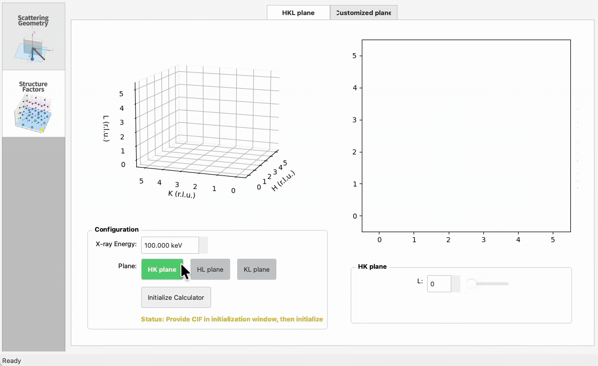
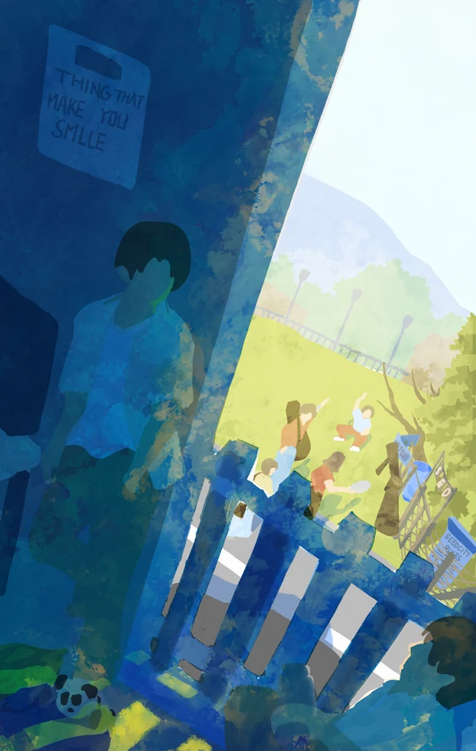
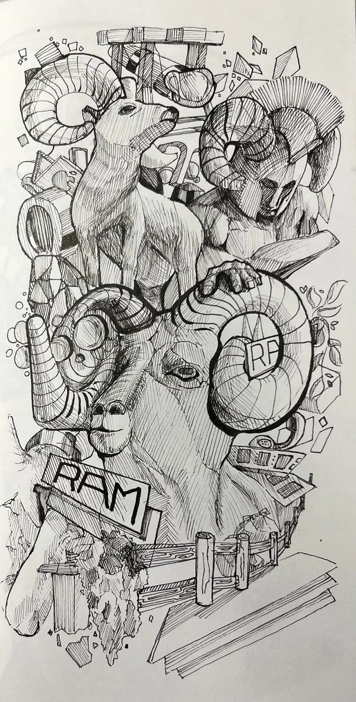
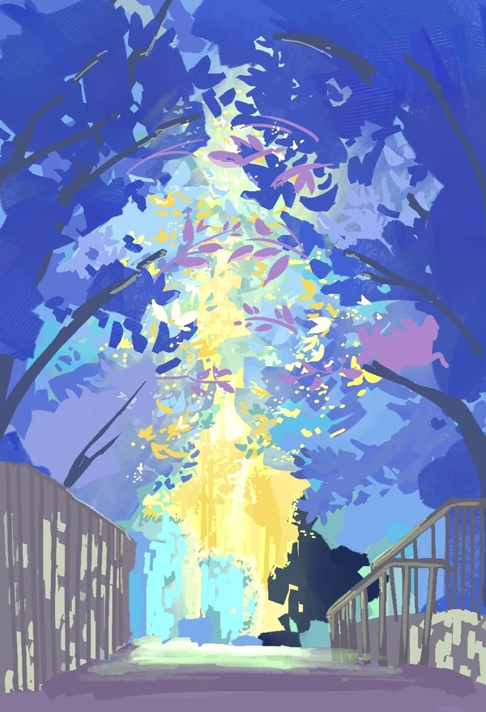

ADVISOR: X-ray toolbox
Software developmentInteractive GUI for visualising and calculating X-ray scattering/diffraction experiments.

Physics lectures & tutorials
Teaching

Lab control & crystal alignment
Instrumentation & lab control

